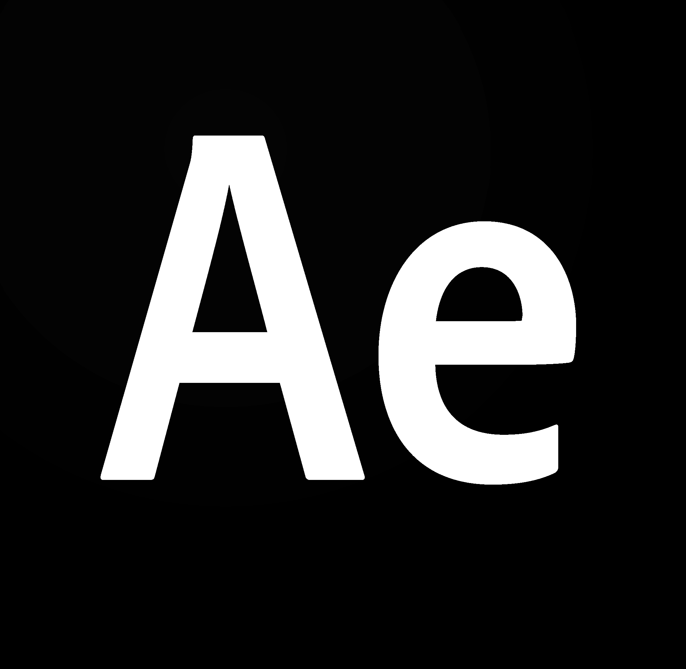
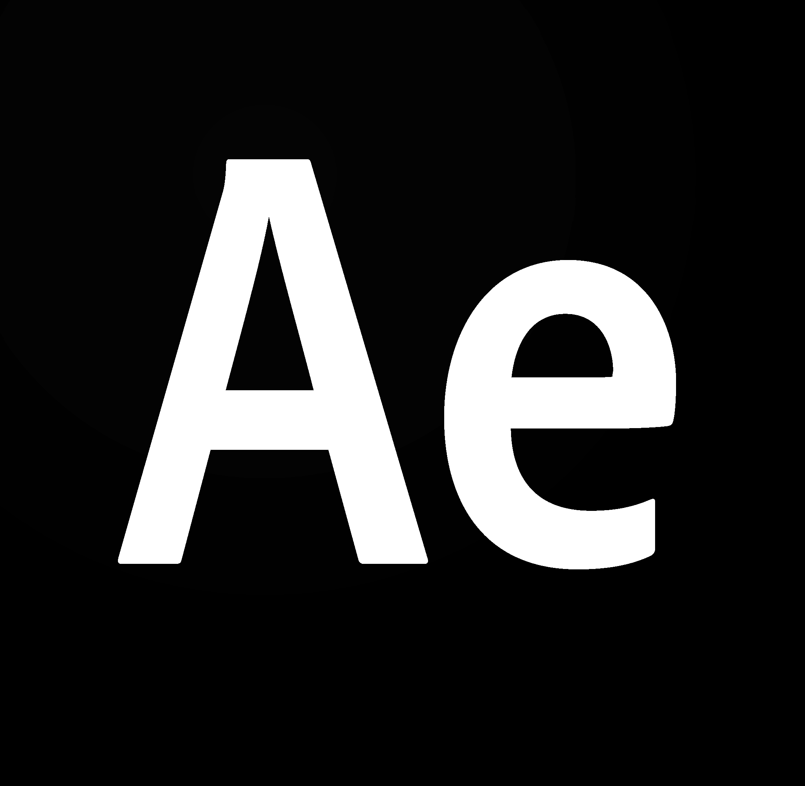

Marion LONDERO
Développeuse Web
Bordeaux, Gironde
Permis B
06 89 73 57 04
Diplômes et Certificats :
- Titre professionnel Développeur Web Full Stack et applications mobile (2020)
- Licence en langues étrangères Appliquées LEA - Anglais Russe (2011)
- BTS Assistant de gestion PME/PMI (2007)
Expérience
Limeo Interactive (agence web) : février 2021
Site vitrine sur Wordpress utilisant un thème custom (understrap) et champs personnalisés (pluggin ACF). Projet effectué en totale autonomie.
Limeo Interactive (agence web) : septembre - octobre 2020
Conception d'un site de formations en ligne à l'aide de Php et du framework Symfony 5 : création de modules d'exercices et d'échanges professeur/élèves. Projet effectué en équipe.
Chullanka (magasin de sport) : 2017 - 2019
Vendeuse en articles de sports de montagne et d'escalade.
Sports Aventure (magasin de sport) : 2012 - 2017
Vendeuse en articles de sports de montagne et d'escalade.
Profil et Compétences
Excellent relationnel, esprit d'équipe, aime relever les défis.

.png)
Technologies et logiciels :
Langages HTML5, CSS3, Bootstrap, JS, jQuery, React, Php, Ajax, Wordpress, Symfony.
Adobe Photoshop, Adobe Illustrator, Adobe Indesign et After Effect.
 

Langues :
Anglais (Courant), Espagnol (Intermédiaire), Russe (Intermédiaire).
Voyages :
Canada, Etats Unis, Russie, Espagne, Thailande.